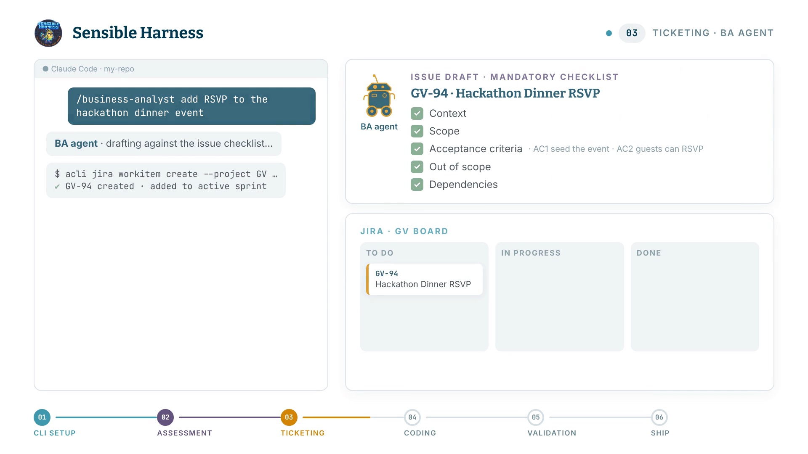
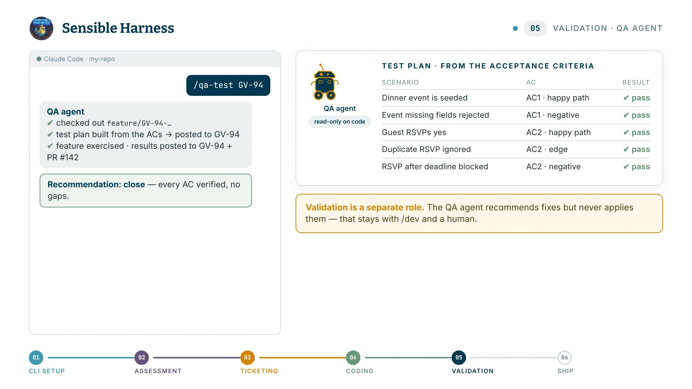

Sharing our Harness for AI Delivery and Maintenance
María José Lalama · Vitória Toebe
Claude Community · Barcelona
AI agents write code faster than any team can review it. That's where tech debt piles up, and teams inherit code nobody fully understands.
Every team rebuilds its own harness. Learned on the run, absent from capacity planning.
The agent produces faster than people can review. We need trust that doesn't depend on reading every line.
No shared conventions, no audit trail, no idea what it cost, and no view of how ready a repo is for agents.
GV-94 · Hackathon Dinner RSVP — CLI setup → assessment → ticketing → coding → validation → ship
Steer the agent before it acts
AGENTS.md behaviour rulesstandards.md: your bar, datedDo the work, one step at a time
Verify what it built after it acts
Every step metered and the cost posted on the ticket, so everyone sees what delivery cost.
The guides encode practices we already trust (Thoughtworks Sensible Defaults): TDD, test pyramid, small commits, CI, a human on the loop.
init writes$ npm i -g ./sensible-harness-0.2.0.tgz $ sensible-harness init ? Which platforms should Sensible Harness target? ◉ Claude Code ◉ Cursor ○ GitHub Copilot ? Which issue tracker does this repo use? › Jira ? Jira board URL for this repo? › …/GV/boards/16685 ✔ 34 skills (claude-code, cursor) ✔ agents: dev · qa · business-analyst ✔ AGENTS.md ✔ CLAUDE.md $ sensible-harness doctor ok every skill in manifest.json is on disk
my-repo/ ├ CLAUDE.md @AGENTS.md ├ AGENTS.md rules + skill index ├ .sensible-harness/ │ └ manifest.json skills · agents │ issueTracker ├ .claude/ │ ├ agents/ dev · qa · BA │ └ skills/ 34 × SKILL.md ├ .cursor/rules/ same skills └ src/ untouched
One source, rendered per tool. Plain Markdown in your repo: inspect it, edit it, review it in PRs.
--- name: tdd description: Use whenever the user asks to run one TDD cycle for a single acceptance criterion… model: sonnet --- ## Step 2 failing test (red) ## Step 3 make it pass (green) ## Step 4 refactor (while green) ## Step 5 stop: green, uncommitted
commit · commit-and-push · open-pr · check-ci · pickup-issue · jira · track-tokens · the agent facades · onboarding
tdd · close-issue · address-pr-comments · qa-test · the 14 assess-* skills · explain-assessment
The description is the trigger. One job per skill, so each one can run alone, be chained, or be handed to an agent.
tools: list is the guardrail| Agent | tools: | model: | What it can't do |
|---|---|---|---|
| dev | Bash Read Grep Glob AskUserQuestion | inherit | No Edit, no Write. It plans; it can't implement. |
| business-analyst | Bash Read Grep Glob AskUserQuestion | inherit | No Edit, no Write. Tickets only. |
| qa | … + Write | inherit | No Edit. Writes reports; read-only on the code under test. |
/dev, /qa and /business-analyst are skills that route to an agent. Typing the command or saying "dev agent" reaches the same instructions.
Bash is still on the list, so this is a strong default, not a sandbox. Hard limits need hooks or permissions (see roadmap).
CLAUDE.md → @AGENTS.mdCLAUDE.md is one line. Claude Code reads the same AGENTS.md that Cursor and Copilot read.
.env*; no --no-verifyfile:line; label inferencesstandards.mdYour standards first. Generic defaults only with explicit opt-in, and marked as such.

From the video · chapter 03
AskUserQuestion when scope is unclearacli, using the jira skill's commands, never from memory/dev is split in two/dev GV-94model: = pinA subagent has no reliable way to reach the human. The main agent owns the approval gate.
A skill's model: only applies when it runs as an Agent-tool spawn with model. Read inline, it runs on the session model.
Each step carries its own inputs. AC text is passed verbatim, never paraphrased.
### Approved implementation plan — GV-94 Branch: feature/GV-94-hackathon-dinner-rsvp 1. [tdd | sonnet | spawn] AC: "Seed the dinner event" 2. [commit | haiku | spawn] AC1's changes only 3. [tdd | sonnet | spawn] AC: "Guests can RSVP" 4. [commit | haiku | spawn] AC2's changes only 5. [commit | haiku | spawn] mop-up · skip if clean 6. [open-pr | haiku | spawn] 7. [check-ci | haiku | spawn] post-PR 8. [address-pr-comments | sonnet | inline] 9. [check-ci | haiku | spawn] after fixes 10. [close-issue | sonnet | inline] ACs + CI + merge Docs impact: none
tdd + one commit per AC# every spawn gets the same prompt shape; nothing improvised Load .claude/skills/<skill>/SKILL.md and follow it exactly. Inputs: <verbatim from the plan>.
tdd stepsStop and ask on any failureNever re-scope the plan: replan with the human
…and, honestly, what holds each one in place today.
| # | Gate | Owner | Held by | Stops |
|---|---|---|---|---|
| 2 | Issue quality | dev subagent | instruction human | Building on a thin ticket |
| 3 | Plan approval | main agent | human plan on ticket | Unreviewed plans |
| 4 | TDD loop | tdd · sonnet | instruction | ACs without a failing test first |
| 5 | Atomic commits | commit · haiku | instruction repo's git hooks | "…and…" commits |
| 6 | Review comments | address-pr-comments | human, per comment | Silent re-scoping |
| 7 | AC verification | close-issue | instruction human | Merging unfinished work |
| 8–9 | CI, twice after PR | check-ci · haiku | CI branch protection | Red merges, stale green badges |
| — | Role boundaries | agent files | tools: list | Planner or QA editing code |
> tdd · AC: "Guests can RSVP" RED guest_can_rsvp … PASSED on first run ⚠ suspect break prod code: rsvp() returns early re-run → still PASSES ✗ test doesn't exercise the AC → rewrite RED guest_can_rsvp … FAILED ✓ right reason GREEN smallest change · full suite green REFACTOR just-added code only · still green STOP green and uncommitted → next plan step
Break the production code on purpose. If the test still passes, the test is wrong.
Stop and ask the caller to split it. The skill never splits silently.
Stop. Either the AC is too coarse or earlier work needs revisiting.
close-issue refuses.
From the video · chapter 05
qa-testclose-issueA dimension under 50, or any P0, is a blocker. Blockers cap the band at Developing; the score is left alone so runs stay comparable.
Docs vs code, rated P0–P3, with questions only a human can answer. They go straight to the BA.
/onboard-me + /setup-workspace. The manifest records their sources, so /dev flags them when a change makes them stale.
task model input output tdd · AC1 sonnet 41,208 6,114 commit haiku 3,902 412 tdd · AC2 sonnet 38,771 5,630 commit·open-pr·check-ci haiku 11,540 1,207 ──────────────────────────────────────────────── model input output est. cost sonnet 79,979 11,744 $0.42 haiku 15,442 1,619 $0.02 total $0.44 illustrative · list prices: sonnet $3/$15, haiku $1/$5 per MTok the real report also has cache-read and cache-write columns
~/.claude/projects/<slug>/<session>.jsonl plus subagents/agent-<id>.jsonl and its .meta.json
Sidechain lines are dropped from the main session; subagents are counted from their own files.
A model with no price shows "unpriced" and stays out of the total. Never $0.
The approval gate ends its turn on the full plan text. No AskUserQuestion for long plans.
Anything that may need the human runs in the foreground.
They explained their own tools to the user. Now there's an explicit rule: never mention your runtime.
A pin does nothing when a skill is read inline. Route through Agent-tool spawns.
Subagent activity also appears as sidechain lines in the main transcript.
Summing transcript entries "by reasoning" goes subtly wrong. The skill runs a Node script.
One connected view across your ecosystem finds the root cause faster, and with more certainty
region from service-b’s responseregion (change 3f2a)3f2a removed region from service-b’s response. service-a still requires it.region, add a contract testClaude Code hooks that block --no-verify, pushes to main, and merges before AC verification. Instructions become guarantees.
The agent asks the questions. Ambiguity goes away up front, and people keep doing the thinking.
Every agent gets evals that catch drift, plus a feedback skill so the harness keeps improving.
Put gates in structure, not prose.
Your standards, context and workflows live in your repo: versioned, inspectable, yours.
Senior AI Product Researcher
AI/Works™

Lead Developer
AI-First Software Maintenance
Sensible Harness was built with Amy Pellegrini and the AI-First Software Delivery team.